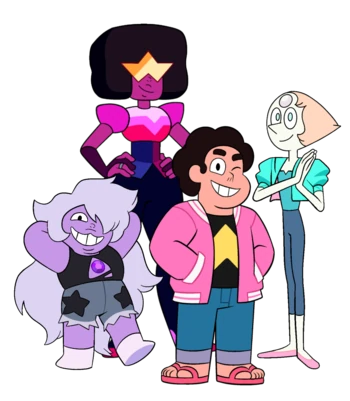
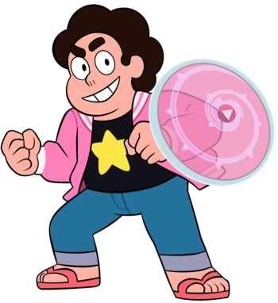
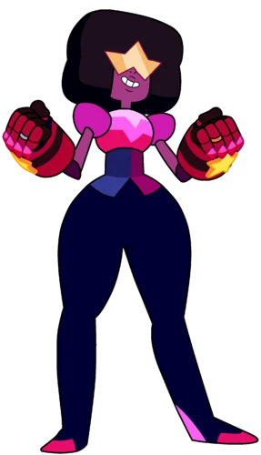
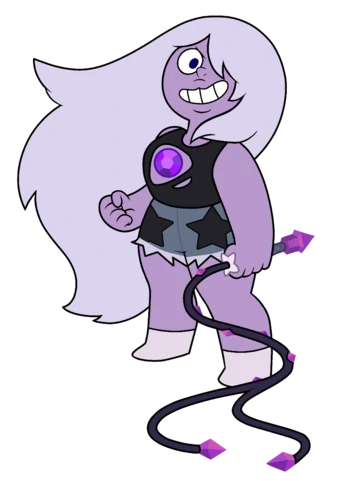
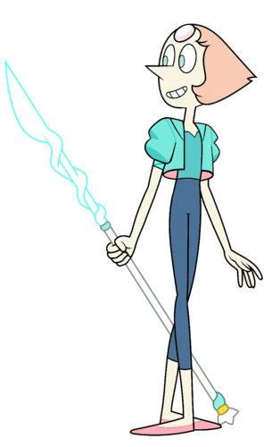

Steven Quartz Universo é o protagonista da série Steven Universo. Ele é filho de Greg Universo e Rose Quartz, o único híbrido conhecido de um humano e uma Gem e a primeira Crystal Gem de descendência humana. Como resultado de sua ascendência, Steven é um ser extraordinariamente único com poderes inatos além dos humanos normais e Gems. Enquanto ele era apenas uma criança, Steven cresceu constantemente de um parceiro para as Crystal Gems no coração da equipe, graças à sua natureza e bondade.

Garnet é a fusão de Rubi e Safira e a atual líder das Crystal Gems. Garnet é uma das últimas Gems sobreviventes na Terra que se juntou às Crystal Gems na Rebelião contra o Gem Homeworld e depois ajudou seus amigos a proteger a Terra nos próximos milênios. Depois que Rose Quartz desistiu de sua forma física para dar à luz seu filho, Steven Universo, Garnet assumiu como líder do grupo.

Ametista é um membro das Crystal Gems. Ela é a última Gem conhecida fabricada na Terra como parte do projeto do Gem Homeworld, sendo uma das últimas Gems sobreviventes na Terra. Depois de ser encontrada por Rose Quartz e as outras Crystal Gems, Ametista ajudou seus amigos a proteger a Terra nos próximos quatro milênios, e muitas vezes ajuda nas brincadeiras de Steven.

Pérola é um membro das Crystal Gems. Ela é a segunda pérola da Diamante Rosa e é uma das seguidoras mais próximas e fiéis de Rose Quartz. Pérola é uma das últimas Gems sobreviventes na Terra que se juntou às Crystal Gems em sua rebelião contra o Gem Homeworld. Pérola protegeria a Terra pelos próximos milênios ao lado de seus amigos, enquanto mais tarde ensinava a Steven os caminhos das Gems. Ela é retratada como uma figura maternal amorosa, gentil e delicada para o Steven.
